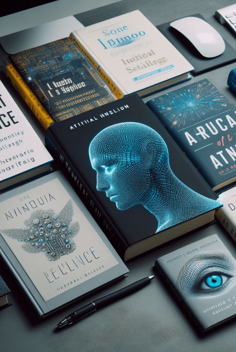
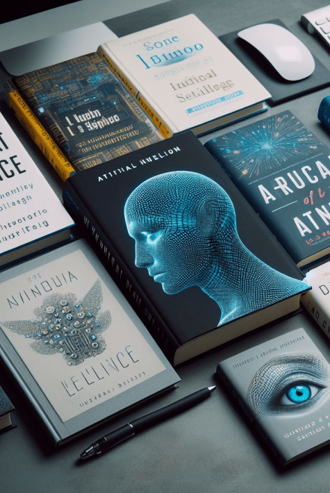

HOME ------ QUICK TEST ------ TEST RESULTS

 Recommended courses (AI major):
Recommended courses (AI major):

 Recommends<- Go BackIntroduction to Artificial Intelligence: Introduces the basic concepts, methods and technologies of
artificial intelligence, including search, knowledge
representation and reasoning, machine learning, etc.
Recommends<- Go BackIntroduction to Artificial Intelligence: Introduces the basic concepts, methods and technologies of
artificial intelligence, including search, knowledge
representation and reasoning, machine learning, etc.
Machine Learning: In-depth study of machine learning algorithms, models and methods, including supervised learning, unsupervised learning, deep learning and other aspects.
Computer Vision: Explore how computers understand and process images, including image feature extraction, target detection, image classification and other technologies.
Natural Language Processing: The study of how to make computers understand and process natural language, including technologies in text classification, semantic analysis, machine translation, etc.
Data Mining and Big Data Analytics: Learn how to extract valuable information and insights from large-scale data, including data preprocessing, pattern discovery, data visualization and other technologies.
Intelligent Systems Design and Applications: Explore how to design and develop intelligent systems and applications for use in various fields such as medical care, finance, transportation, etc.
Ethics and Artificial Intelligence: Discuss the ethical, social and legal issues in the development of artificial intelligence, and explore how to ensure fairness, transparency and responsible behavior in AI applications.Next ->
Explore your IT future Now! ✨Your academic and career path should be clear and
promising. Our platform provides guidance on learning paths
specifically for IT and digital creative fields to help you
make informed choices.
Machine Learning: In-depth study of machine learning algorithms, models and methods, including supervised learning, unsupervised learning, deep learning and other aspects.
Computer Vision: Explore how computers understand and process images, including image feature extraction, target detection, image classification and other technologies.
Natural Language Processing: The study of how to make computers understand and process natural language, including technologies in text classification, semantic analysis, machine translation, etc.
Data Mining and Big Data Analytics: Learn how to extract valuable information and insights from large-scale data, including data preprocessing, pattern discovery, data visualization and other technologies.
Intelligent Systems Design and Applications: Explore how to design and develop intelligent systems and applications for use in various fields such as medical care, finance, transportation, etc.
Ethics and Artificial Intelligence: Discuss the ethical, social and legal issues in the development of artificial intelligence, and explore how to ensure fairness, transparency and responsible behavior in AI applications.Next ->